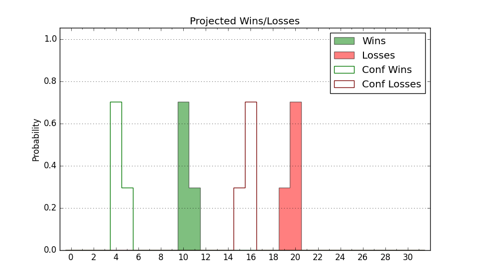

| Home | Game Probabilities | Conferences | Preseason Predictions | Odds Charts | NCAA Tournament |
| City: | Chicago, Illinois | |
| Conference: | Missouri Valley (11th)
| |
| Record: | 4-15 (Conf) 10-19 (Overall) | |
| Ratings: | Comp.: -0.3 (166th) Net: -0.3 (166th) Off: 101.4 (246th) Def: 101.7 (110th) SoR: 0.0 (139th) |
| Remaining | ||||||
|---|---|---|---|---|---|---|
| Date | Opponent | Win Prob | Pred. | |||
| 3/3 | @ Missouri St. (142) | 29.6% | L 68-74 | |||
| Previous | Game Score | |||||
| Date | Opponent | Win Prob | Result | Off | Def | Net |
| 11/6 | @Cincinnati (44) | 8.9% | L 58-69 | -8.1 | 15.9 | 7.8 |
| 11/10 | Little Rock (205) | 72.5% | W 86-71 | 12.0 | 1.7 | 13.7 |
| 11/14 | @Loyola Chicago (98) | 18.8% | W 72-67 | 9.9 | 14.8 | 24.7 |
| 11/24 | (N) Middle Tennessee (302) | 76.9% | W 70-40 | 8.8 | 31.1 | 39.8 |
| 11/25 | (N) George Washington (199) | 57.5% | W 89-79 | 14.0 | 2.6 | 16.6 |
| 11/26 | (N) UNC Greensboro (129) | 38.1% | L 57-58 | -14.5 | 14.4 | -0.1 |
| 11/30 | Illinois St. (178) | 67.6% | L 64-69 | -11.2 | -4.8 | -16.0 |
| 12/8 | @Jacksonville St. (194) | 41.3% | W 55-49 | -13.0 | 23.2 | 10.2 |
| 12/12 | Green Bay (235) | 76.2% | L 68-70 | -5.4 | -8.0 | -13.4 |
| 12/16 | Western Michigan (282) | 83.7% | W 89-68 | 15.2 | 1.7 | 17.0 |
| 12/21 | Incarnate Word (335) | 92.0% | L 66-67 | -11.5 | -10.5 | -22.0 |
| 12/30 | @Southern Illinois (111) | 21.8% | L 50-62 | -19.4 | 11.1 | -8.3 |
| 1/2 | @Murray St. (151) | 31.0% | L 73-85 | 7.9 | -25.4 | -17.6 |
| 1/6 | Valparaiso (293) | 84.6% | W 70-64 | -5.4 | -3.8 | -9.2 |
| 1/10 | @Northern Iowa (118) | 22.4% | L 59-67 | -6.1 | 7.4 | 1.3 |
| 1/13 | Bradley (57) | 29.6% | L 59-77 | -1.6 | -17.6 | -19.2 |
| 1/17 | Murray St. (151) | 60.5% | L 58-73 | -16.6 | -2.4 | -19.0 |
| 1/20 | @Valparaiso (293) | 61.8% | L 77-84 | 10.5 | -27.1 | -16.6 |
| 1/24 | Indiana St. (31) | 21.7% | L 83-89 | 13.6 | -11.9 | 1.7 |
| 1/27 | @Belmont (121) | 23.6% | L 65-74 | -13.7 | 10.6 | -3.1 |
| 1/31 | @Evansville (200) | 43.0% | L 60-77 | -12.3 | -7.0 | -19.3 |
| 2/3 | Southern Illinois (111) | 48.6% | L 71-74 | 1.4 | -1.3 | 0.2 |
| 2/7 | @Illinois St. (178) | 38.0% | W 61-56 | 3.0 | 10.8 | 13.8 |
| 2/11 | Northern Iowa (118) | 49.6% | W 71-65 | 4.5 | 7.5 | 12.0 |
| 2/14 | @Bradley (57) | 11.0% | L 73-85 | 10.7 | -1.9 | 8.9 |
| 2/18 | Belmont (121) | 51.3% | L 60-75 | -18.5 | -5.7 | -24.2 |
| 2/21 | Evansville (200) | 72.0% | W 88-79 | 22.2 | -18.8 | 3.5 |
| 2/24 | @Indiana St. (31) | 7.5% | L 73-88 | 3.5 | 1.7 | 5.2 |
| 2/28 | Drake (58) | 29.8% | L 105-107 | 13.9 | -3.1 | 10.8 |
| Stats & Trends | |||||
|---|---|---|---|---|---|
| Current | Day | Week | Month | Season | |
| Composite | -0.3 | -0.1 | +0.3 | +1.3 | +6.4 |
| Comp Rank | 166 | +1 | +2 | +16 | +64 |
| Net Efficiency | -0.3 | -0.1 | +0.3 | +1.1 | -- |
| Net Rank | 166 | +1 | +2 | +17 | -- |
| Off Efficiency | 101.4 | +0.0 | +0.8 | +1.9 | -- |
| Off Rank | 246 | -2 | +8 | +12 | -- |
| Def Efficiency | 101.7 | -0.1 | -0.5 | -0.8 | -- |
| Def Rank | 110 | -- | -5 | +6 | -- |
| SoS Rank | 120 | -2 | -- | +41 | -- |
| Exp. Wins | 10.3 | +0.0 | -0.3 | +0.1 | -2.8 |
| Exp. Conf Wins | 4.3 | +0.0 | -0.3 | +0.1 | -3.9 |
| Conf Champ Prob | 0.0 | -- | -- | -- | -1.7 |

| Advanced Stats | ||
|---|---|---|
| Stat | Value | Rank |
| Off Eff FG % | 0.521 | 125 |
| Off Ast Ratio | 0.159 | 77 |
| Off ORB% | 0.223 | 324 |
| Off TO Rate | 0.161 | 272 |
| Off FT Ratio | 0.269 | 326 |
| Def Eff FG % | 0.474 | 75 |
| Def Ast Ratio | 0.134 | 110 |
| Def ORB% | 0.273 | 153 |
| Def TO Rate | 0.147 | 178 |
| Def FT Ratio | 0.368 | 274 |